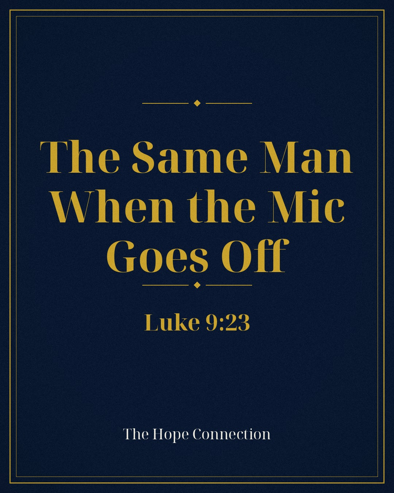

And he said to all, “If anyone would come after me, let him deny himself and take up his cross daily and follow me.”
Luke 9:23 (ESV)
What it actually means to follow Jesus — a teaching by Lewis Fuller.
What it actually means to follow Jesus
A lot of people think following Jesus means believing the right things about Him. They think it means a prayer prayed once, a church attended on Sundays, a fish sticker on the back of a truck. And some of them are sincere — but if you asked them what it actually costs, what it actually changes, day by day, they would go quiet. Because nobody ever told them. Or because the real answer is heavier than the one they were sold.
I can tell you what following myself looked like. For over thirty years I was my own shepherd, and I led myself straight into the pit — rehabs, programs, promises I could not keep, a life I could not fix no matter how hard I tried. I was not following Jesus in those years. I was not even following a plan. I was following the next fix, the next escape, the next way to stop hurting for a little while. That is where self-leadership ends. Every time.
Then came the night everything changed. I was at Haven of Rest, a men's discipleship program in Anderson, South Carolina — my fourth time through those doors — reading John 17 with a hunger I had never had before. Not a hunger to know about God. A hunger to know Him. And Jesus met me right where I was. That night I started learning what following Him actually means — and I am still learning it, one day at a time.
So what does it actually mean? Jesus said it Himself, and He did not soften it: “If anyone would come after me, let him deny himself and take up his cross daily and follow me” (Luke 9:23). Look at the weight of that. Deny himself — not improve himself, not excuse himself, deny himself. Take up his cross daily — not once, at an altar, in a moment of feeling, but daily, the way you get up and put your feet on the floor. And follow me.
That word “follow” is worth slowing down for. In the Greek it is akoloutheō (ah-koh-loo-THEH-oh) — to walk the same road as someone, to go where He goes because He is going there. It is the same word Jesus used when He said, “My sheep hear my voice, and I know them, and they follow me” (John 10:27). Following is not admiring from a distance. It is not applauding the Shepherd from the safety of the fence. It is feet on His road, close enough to hear His voice, close enough that when He turns, you turn.
Here is why the cost should not scare you off: Jesus told the truth about the exchange. “For what does it profit a man if he gains the whole world and loses or forfeits himself?” (Luke 9:25). I spent thirty years gaining nothing and forfeiting everything. Following Jesus cost me my old life — and I want you to hear this plainly — my old life was killing me. The cross He asks you to carry is not heavier than the chains you are carrying now. It only feels that way from inside the chains.
And if you have failed at following — wandered off, denied Him with your life the way Peter denied Him with his words — hear the gospel in this: after the resurrection, after all of Peter's failure, Jesus gave him one command, twice repeated: “Follow me” (John 21:19, 22). We do not follow Jesus to earn His love. That is sola gratia — grace alone. He came after us first, like the shepherd who leaves the ninety-nine for the one (Luke 15:4). We follow because we were found.
And here is the test that exposes every counterfeit: a real follower is the same person behind closed doors as he is in the open. Jesus reserved His sharpest words for men who prayed on street corners to be seen, while their private lives were rotten (Matthew 6:5; 23:27). His way is the opposite — pray to your Father in secret, He said, “and your Father who sees in secret will reward you” (Matthew 6:6). What you do when no one is watching is who you actually are. But the closed door is only half of it. The same Jesus who taught secret prayer also said, “Everyone who acknowledges me before men, I also will acknowledge before my Father” — and warned that whoever is ashamed of Him, of that one the Son of Man will be ashamed (Matthew 10:32; Luke 9:26). Secret devotion, open confession. Private surrender, public allegiance. A follower does not wear Jesus on Sunday and hang Him in the closet on Monday.
I have to ask myself this question, and I have to ask it honestly: Am I the same man at home — the same man who reflects Jesus — as I profess to be in my ministry? Do my values at home match the values of the ministry God has entrusted me with? That question, asked honestly and often, is worth more than any audience. God did not give me a ministry to hide behind. He gave me a home to be faithful in first — and if the two ever stop matching, the answer is not to polish the ministry. The answer is to repent at home.
So here is what it actually means to be a follower of Jesus Christ: it means your life has a new direction and a new Leader, and you prove it not with your words but with your feet — daily, honestly, sometimes trembling, always returning, the same behind closed doors as in the open. It means Jesus is not part of your life. He is the road your life is on.
Reflect — Questions & Answers
1. Is following Jesus a one-time decision or a daily one? Jesus answered that Himself — “take up his cross daily” (Luke 9:23). A decision was made the night I believed, but following is the decision renewed every morning. Yesterday's surrender will not carry today's road.
2. What if I keep failing and wandering off? You are in the company of Peter, who denied Jesus three times and was restored with the words “Follow me” (John 21:19). The Shepherd does not wait for the sheep to find their way back — He goes after the one who is lost (Luke 15:4). Come back. The road is still there, and so is He.
3. Does it matter what I do in private if my public life looks Christian? It is the part that matters most. The Pharisees had the public side polished and the private side rotten, and Jesus called them whitewashed tombs (Matthew 23:27). God sees in secret (Matthew 6:6; Hebrews 4:13) — and the good news is that the hidden life is exactly where He does His deepest work. Be the same person in both places, and let the secret place be where the open life gets its strength.
4. What does denying myself look like in ordinary life? It looks like His voice outranking your appetite, your temper, and your pride — in small choices nobody sees. You hear His voice in His Word (John 10:27), and then your feet go His way instead of yours. Not perfectly. Faithfully.
What has following yourself cost you — and what is keeping you from following Him today?
Listen to the podcast
Hear Lewis tell this story in his own voice on The Hope Connection podcast — meeting others where they are in the Name of Jesus.